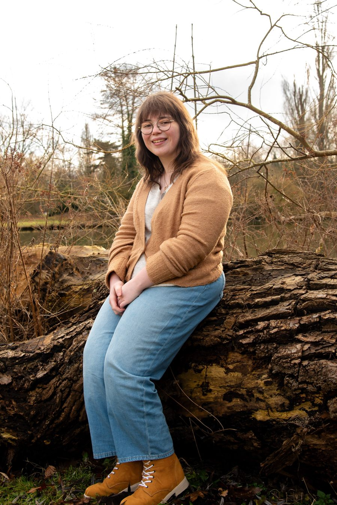
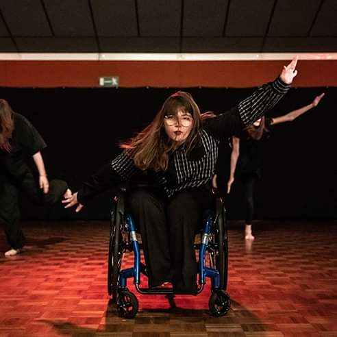
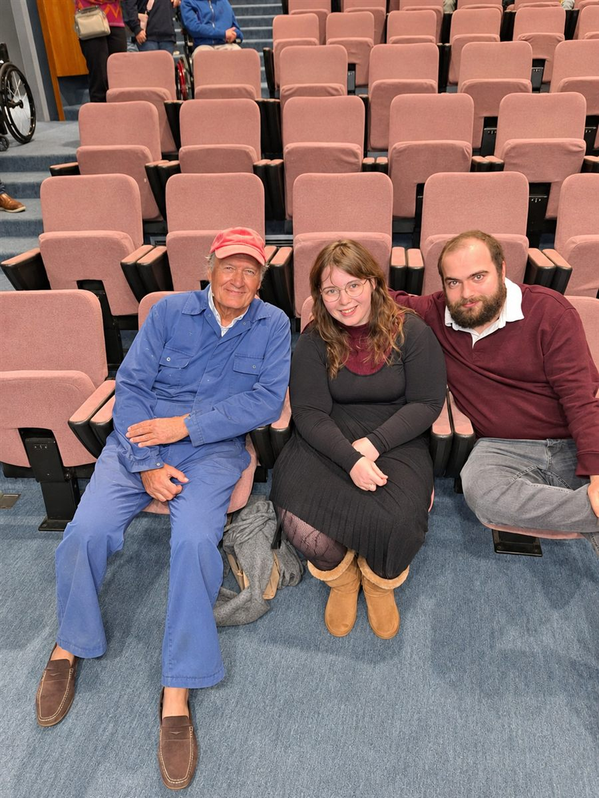
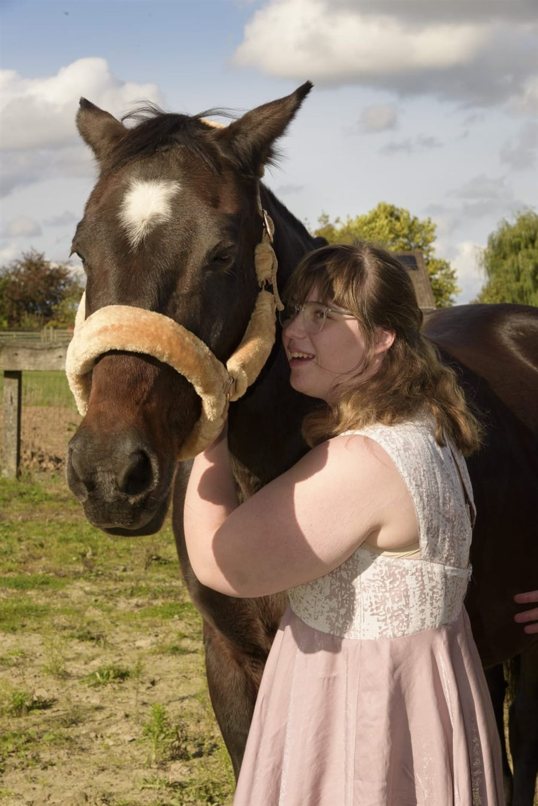

Hey there, I'm Dieuwke!
Welcome to my little corner of the creative world! ;)
I'm a busy bee with a creative mind and a big love for colours. Ever since I was little, you could find me drawing or crafting. Turning that childhood passion into my future career? That's a dream come true!
As a Cross Media Design student, I love getting creative and getting my hands dirty! From wax crayons and watercolours to experimenting with paper textures, I enjoy bringing a handmade touch to my designs.
Outside my creative world, you'll find me dancing, horse riding or watching FC De Kampioenen. I just can't get enough of it! ;)
I love thinking outside the box, finding creative solutions and looking for that perfect middle ground. Finding a way that works for everyone? That's kind of my thing!
And that brings me to something close to my heart: inclusion is at the heart of everything I create. I believe colours can tell stories, spark emotions and bring people together. My goal? To create meaningful designs that build bridges between people and break down barriers.
Because to me, great design isn't just something you see. It's something you feel!
Well, that's a little piece of me! Feel free to explore my pinboard and discover more. ;)
With a splash of colour,
Dieuwke
What am I good at?
-
Giving design a deeper meaning!
I love creating designs that tell a story beyond what you see at first glance. Every colour, shape and little detail has a purpose. There’s often more to my designs than meets the eye, and that’s exactly what makes them special!
-
Bringing stories to life in the big business world!
I love turning a company's stories, values and emotions into meaningful branding. Every colour, shape and little detail has a purpose, even if you don't notice it right away.
For me, branding is more than just a pretty logo. It's about creating something people can recognise, feel and connect with.
Because there's always more than meets the eye! ;)
-
There's always a way!
I'm a creative problem solver who loves a good challenge! Whether it's finding a clever solution or the perfect middle ground, I always try to find a way that works for everyone.
Because sometimes, the best solution is somewhere in between! ;)
-
A little humour, a lot of illustration!
I love bringing stories to life through my drawings! With a playful illustration style, a touch of humour and lots of creativity, I turn ideas into something fun and meaningful.
Because sometimes, a drawing can tell a story better than a thousand words! ;)
My Creative Journey
-
Childhood
Little me, big imagination!
You could always find me at the drawing table or in the craft corner. Creativity has been part of me for as long as I can remember!
-
2024 – today
Turning passion into a future!
Studying Cross Media Design and discovering how colours, stories and creativity can bring people together.
-
The future
The best is yet to come!
Turning meaningful stories into creative designs, building bridges between people and making my passion my profession!
Let's create something together!
Looking for branding, personalised prints for your family or someone to turn your stories into something visual?
Or maybe you've got a creative project in mind but haven't quite figured out how to make it work?
Whatever the challenge, I'd love to help you find that perfect middle ground! ;)
Let's get in touch!

